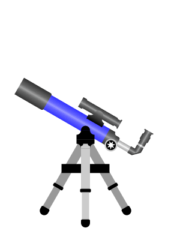

ТЕЛЕСКОП
Характеристики телескопа: f/10.0 | r=2.00" | 11.3m
Различимый размер кратеров на Луне 7.5км
Рекомендуемые увеличения
2.0 D : 140 X (f = 5.0мм , выходной зрачок = 0.5мм)
1.5 D : 119 X (f = 5.9мм , выходной зрачок = 0.6мм)
1.0 D : 70 X (f = 10.0мм , выходной зрачок = 1.0мм)
0.7 D : 49 X (f = 14.3мм , выходной зрачок = 1.4мм)
D / 2 : 35 X (f = 20.0мм , выходной зрачок = 2.0мм)
D / 3 : 23 X (f = 30.0мм , выходной зрачок = 3.0мм)
D / 6 : 12 X (f = 60.0мм , выходной зрачок = 6.0мм)
ОКУЛЯР
НАБЛЮДАЕМ: